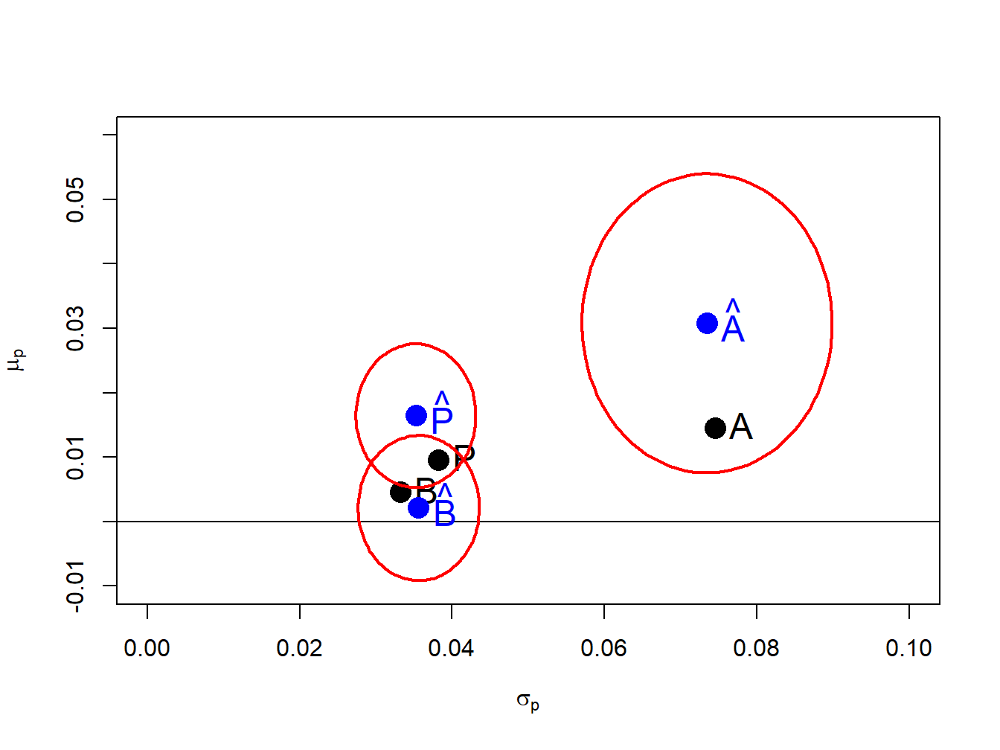
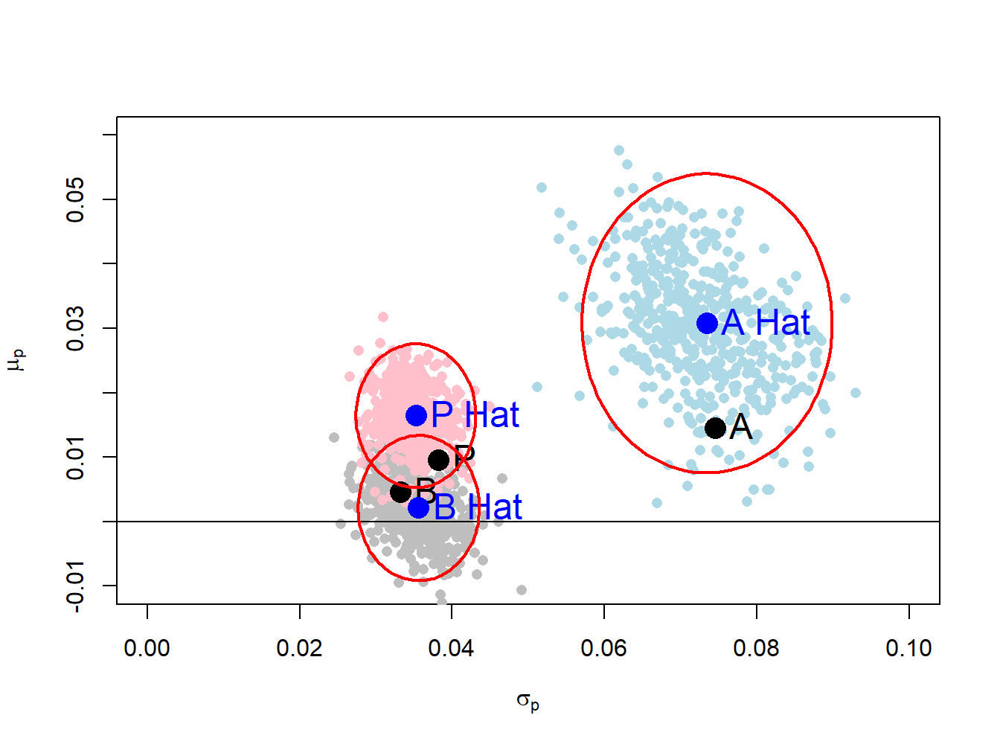
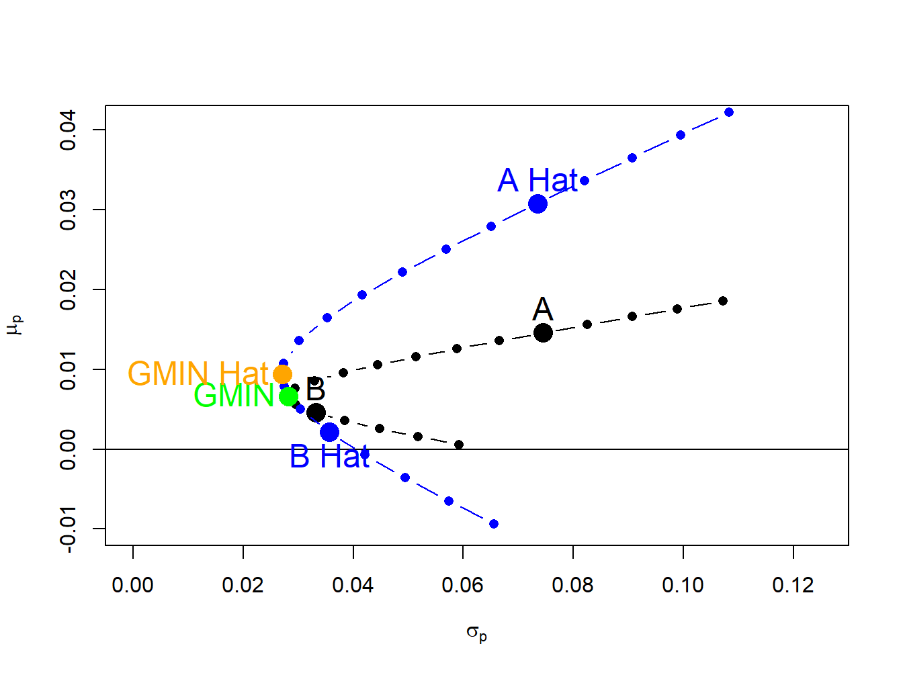
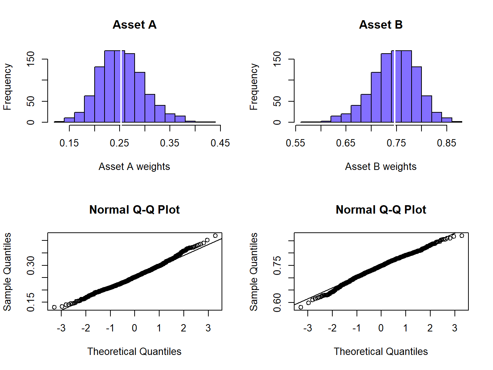
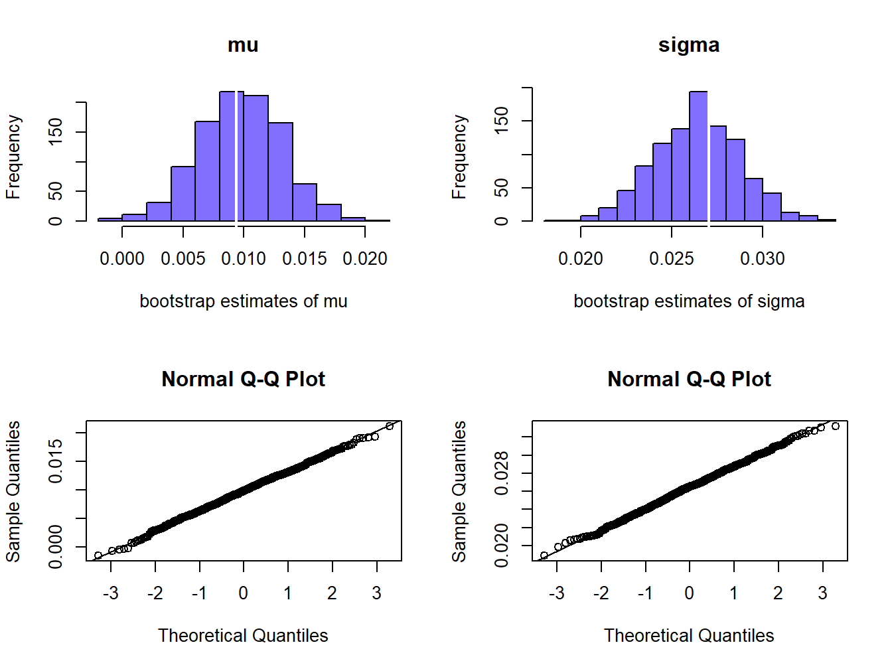
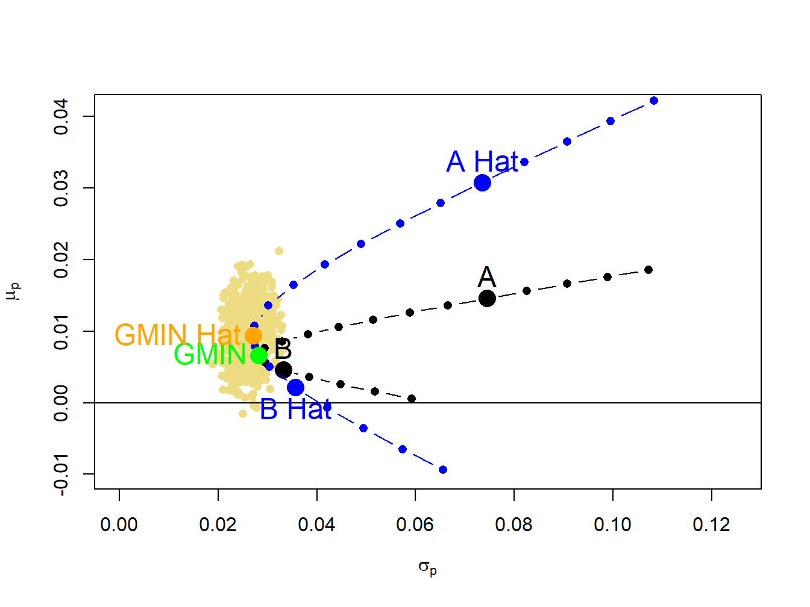
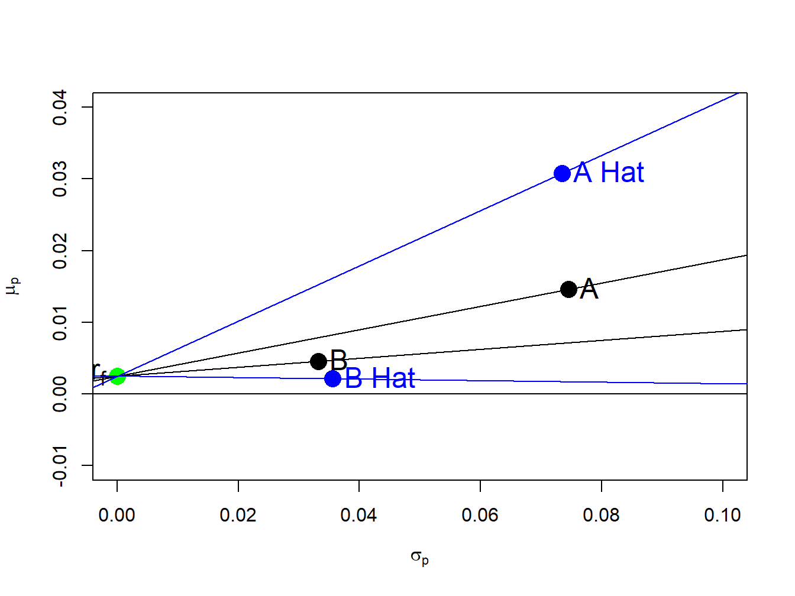
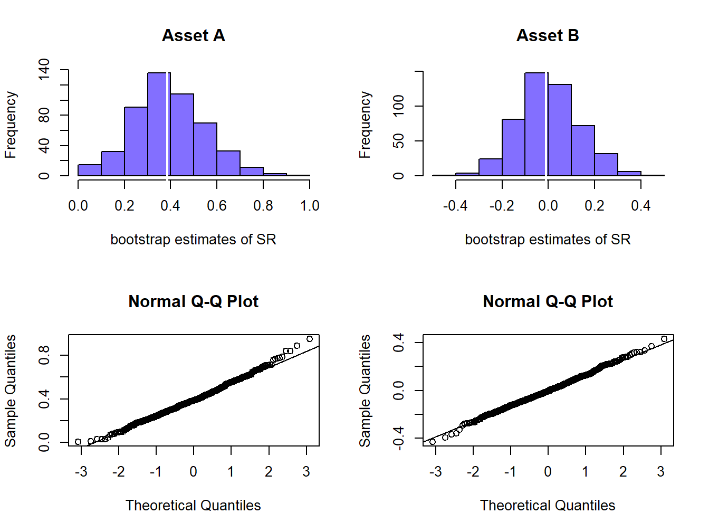

In Chapter 10 I introduced mean-variance portfolio theory in the context of simple portfolios with two risky assets and a safe asset. The theory presented assumed that investors know the true expected returns, variances, and correlations between returns (i.e., the parameters of the GWN model of returns). Of course, the real world implementation of mean-variance portfolio theory requires investors to estimate expected returns, variances, and correlations. In this chapter I explore the implications of estimation errors in the parameters of the GWM for asset returns for the application of mean-variance portfolio theory. The quantification of estimation error in mean-variance portfolio analysis is novel and under appreciated by many practitioners, and provides insights into some pitfalls in the practical application of mean-variance portfolio theory. Because mean-variance portfolios are functions of GWN model parameters, I use tools for the statistical analysis of functions of GWN model parameters presented in Chapter 8 throughout this chapter.
The R packages used in this chapter are boot, bootstrap, car, ellipse, introcompfinr, mvtnorm, and PerformanceAnalytics. Have these packages installed and loaded in R before replicating the chapter examples.
14.1 Portfolios of Two Risky Assets
Most of the issues involved with the statistical analysis of portfolios can be illustrated in the simple case of a two asset portfolio. Let \(R_{A}\) and \(R_{B}\) denote the simple returns on two risky assets and assume these returns are characterized by the GWN model: \[
\left(\begin{array}{c}
R_{A}\\
R_{B}
\end{array}\right)\sim N\left(\left(\begin{array}{c}
\mu_{A}\\
\mu_{B}
\end{array}\right),\,\left(\begin{array}{cc}
\sigma_{A}^{2} & \sigma_{AB}\\
\sigma_{AB} & \sigma_{B}^{2}
\end{array}\right)\right).
\tag{14.1}\]
In matrix notation: \[
\mathbf{R}\sim N(\boldsymbol{\mu},\,\boldsymbol{\Sigma}),
\] where \[
\mathbf{R}=\left(\begin{array}{c}
R_{A}\\
R_{B}
\end{array}\right),\,\boldsymbol{\mu}=\left(\begin{array}{c}
\mu_{A}\\
\mu_{B}
\end{array}\right),\,\boldsymbol{\Sigma}=\left(\begin{array}{cc}
\sigma_{A}^{2} & \sigma_{AB}\\
\sigma_{AB} & \sigma_{B}^{2}
\end{array}\right).
\] A portfolio with weight vector \(\mathbf{x}=(x_{A},x_{B})^{\prime}\) has return \(R_{p}=\mathbf{x}^{\prime}\mathbf{R}=x_{A}R_{A}+x_{B}R_{B}\) which is also described by the GWN model: \[\begin{eqnarray*}
R_{p} & \sim & N(\mu_{p},\,\sigma_{p}^{2}),\\
\mu_{p} & = & \mathbf{x}^{\prime}\mu=x_{A}\mu_{A}+x_{B}\mu_{B},\\
\sigma_{p}^{2} & = & \mathbf{x}^{\prime}\mathbf{\varSigma}\mathbf{x}=x_{A}^{2}\sigma_{A}^{2}+x_{B}^{2}\sigma_{B}^{2}+2x_{A}x_{B}\sigma_{AB}.
\end{eqnarray*}\] I assume that \(\{\mathbf{r}_{t}\}_{t=1}^{T}\) is the observed sample of asset returns of size \(T\), where \(\mathbf{r}_{t}=(r_{At},r_{Bt})^{\prime}\), is generated from the GWN model Equation 14.1 from which I create the sample portfolio returns \(r_{p,t}=\mathbf{x}^{\prime}\mathbf{r}_{t}=x_{A}r_{At}+x_{B}r_{Bt}\). I assume that the portfolio weight vector \(\mathbf{x}\) remains fixed over the observed sample and that the portfolio is rebalanced every period to maintain the fixed weights.
The true GWN model parameters are unknown in practice and must be estimated from the observed data. As described in Chapter 7, the GWN model parameters are estimated using the sample statistics: \[
\begin{aligned}
& \hat{\mu}_{i}=\frac{1}{T}\sum_{t=1}^{T}r_{it},\,\hat{\sigma}_{i}^{2}=\frac{1}{T-1}\sum_{t=1}^{T}(r_{it}-\hat{\mu}_{i})^{2}, \nonumber \\
& \hat{\sigma}_{i}=\sqrt{\hat{\sigma}_{i}^{2}},\,\hat{\sigma}_{ij}^{2}=\frac{1}{T-1}\sum_{t=1}^{T}(r_{it}-\hat{\mu}_{i})(r_{jt}-\hat{\mu}_{j}).
\end{aligned}
\tag{14.2}\] These estimates are consistent, asymptotically normally distributed, and have estimation errors which can be quantified by standard error formulas:1
14.1.1 Estimation of GWN Model Parameters for Portfolios
You can estimate the GWN model parameters \(\mu_{p}\), \(\sigma_{p}^{2}\) and \(\sigma_{p}\) for the portfolio return, \(R_{p}\), using two equivalent methods. In the first method, you use the sample portfolio returns \(\{r_{p,t}\}_{t=1}^{T}\) and compute the sample statistics: \[
\hat{\mu}_{p}=\frac{1}{T}\sum_{t=1}^{T}r_{p,t},\,\hat{\sigma}_{p}^{2}=\frac{1}{T-1}\sum_{t=1}^{T}(r_{p,t}-\hat{\mu}_{p})^{2},\,\hat{\sigma}_{p}=\sqrt{\hat{\sigma}_{p}^{2}}.
\tag{14.4}\] These estimates are unbiased and asymptotically normal with standard errors: \[
\mathrm{se}(\hat{\mu}_{p})=\frac{\sigma_{p}}{\sqrt{T}},\,\mathrm{se}(\hat{\sigma}_{p}^{2})\approx\frac{\sigma_{p}^{2}}{\sqrt{T/2}},\,\mathrm{se}(\hat{\sigma}_{p})\approx\frac{\sigma_{p}}{\sqrt{2T}}.
\tag{14.5}\] In the second method, I compute estimates of \(\mu_{p}\) and \(\sigma_{p}^{2}\) directly from the individual asset estimates in Equation 14.2: \[
\hat{\mu}_{p} = \mathbf{x}^{\prime}\hat{\boldsymbol{\mu}}=x_{A}\hat{\mu}_{A}+x_{B}\hat{\mu}_{B},
\tag{14.6}\]\[
\hat{\sigma}_{p}^{2} = \mathbf{x}^{\prime}\widehat{\boldsymbol{\Sigma}}\mathbf{x}=x_{A}^{2}\hat{\sigma}_{A}^{2}+x_{B}^{2}\hat{\sigma}_{B}^{2}+2x_{A}x_{B}\hat{\sigma}_{AB}.
\tag{14.7}\] The estimates of \(\mu_{p}\) and \(\sigma_{p}^{2}\) in Equation 14.6 and Equation 14.7, respectively, are numerically identical to the estimates in Equation 14.4. To see this, consider the calculation of \(\hat{\mu}_{p}\) in Equation 14.6: \[\begin{eqnarray*}
\hat{\mu}_{p} & = & x_{A}\hat{\mu}_{A}+x_{B}\hat{\mu}_{B}=x_{A}\left(\frac{1}{T}\sum_{t=1}^{T}r_{At}\right)+x_{B}\left(\frac{1}{T}\sum_{t=1}^{T}r_{Bt}\right)\\
& = & \frac{1}{T}\sum_{t=1}^{T}(x_{A}r_{At}+x_{B}r_{Bt})=\frac{1}{T}\sum_{t=1}^{T}r_{p,t}.
\end{eqnarray*}\] The proof of the equivalence of \(\hat{\sigma}_{p}^{2}\) in Equation 14.7 with \(\hat{\sigma}_{p}^{2}\) in Equation 14.4 is left as an end-of-chapter exercise.
The standard errors of \(\hat{\mu}_{p}\) and \(\hat{\sigma}_{p}^{2}\) can also be directly calculated from Equation 14.6 and Equation 14.7. Consider the calculation for \(\mathrm{se}(\hat{\mu}_{p})\): \[
\mathrm{var}(\hat{\mu}_{p})=\mathrm{var}(x_{A}\hat{\mu}_{A}+x_{B}\hat{\mu}_{B})=x_{A}^{2}\mathrm{var}(\hat{\mu}_{A})+x_{B}^{2}\mathrm{var}(\hat{\mu}_{B})+2x_{A}x_{B}\mathrm{cov}(\hat{\mu}_{A},\hat{\mu}_{B}).
\tag{14.8}\] In chapter Chapter 7 it was shown that \[
\mathrm{var}(\hat{\mu}_{A})=\frac{\sigma_{A}^{2}}{T},\,\mathrm{var}(\hat{\mu}_{B})=\frac{\sigma_{B}^{2}}{T},\, \mathrm{cov}(\hat{\mu}_{A},\hat{\mu}_{B})=\frac{\sigma_{AB}}{T}.
\] Then Equation 14.8 can be rewritten as: \[\begin{eqnarray*}
\mathrm{var}(\hat{\mu}_{p}) & = & x_{A}\frac{\sigma_{A}^{2}}{T}+x_{B}\frac{\sigma_{B}^{2}}{T}+2x_{A}x_{B}\frac{\sigma_{AB}}{T}\\
& = & \frac{1}{T}\left(x_{A}^{2}\sigma_{A}^{2}+x_{B}^{2}\sigma_{B}^{2}+2x_{A}x_{B}\sigma_{AB}\right)\\
& = & \frac{\sigma_{p}^{2}}{T}.
\end{eqnarray*}\] Hence, \[
\mathrm{se}(\hat{\mu}_{p})=\sqrt{\mathrm{var}(\hat{\mu}_{p})}=\frac{\sigma_{p}}{\sqrt{T}},
\] which is the same formula given in Equation 14.5.
Unfortunately, the calculation of \(\mathrm{se}(\hat{\sigma}_{p}^{2})\) is a bit horrific and I only sketch out some of the details. Now, \[
\begin{aligned}
\mathrm{var}(\hat{\sigma}_{p}^{2}) & = \mathrm{var}(x_{A}^{2}\hat{\sigma}_{A}^{2}+x_{B}^{2}\hat{\sigma}_{B}^{2}+2x_{A}x_{B}\hat{\sigma}_{AB})\\
& = x_{A}^{4}\mathrm{var}(\hat{\sigma}_{A}^{2})+x_{B}^{4}\mathrm{var}(\hat{\sigma}_{B}^{2})+4x_{A}^{2}x_{B}^{2}\mathrm{var}(\hat{\sigma}_{AB})\nonumber \\
& +2x_{A}^{2}x_{B}^{2}\mathrm{cov}(\hat{\sigma}_{A}^{2},\hat{\sigma}_{B}^{2})+4x_{A}^{3}x_{B}\mathrm{cov}(\hat{\sigma}_{A}^{2},\hat{\sigma}_{AB})\nonumber \\
& +4x_{A}x_{B}^{3}\mathrm{cov}(\hat{\sigma}_{B}^{2},\hat{\sigma}_{AB})\nonumber
\end{aligned}
\tag{14.9}\] Unfortunately, there are no easy formulas for \(\mathrm{var}(\hat{\sigma}_{AB})\), \(\mathrm{cov}(\hat{\sigma}_{A}^{2},\hat{\sigma}_{B}^{2})\), \(\mathrm{cov}(\hat{\sigma}_{A}^{2},\hat{\sigma}_{AB})\) and \(\mathrm{cov}(\hat{\sigma}_{B}^{2},\hat{\sigma}_{AB})\). With a CLT approximation and much tedious calculation it can be shown that Equation 14.9 is equal to the square of \(\mathrm{se}(\hat{\sigma}_{p}^{2})\) given in Equation 14.5. Obviously, the method of computing standard errors for \(\hat{\mu}_{p}\) and \(\hat{\sigma}_{p}^{2}\) directly from the GWN model estimates computed from the sample portfolio returns is much easier than the indirect calculations based on the individual asset estimates, especially for \(\hat{\sigma}_{p}^{2}\).
Example 14.1 (Example data for two risky asset portfolio) To be completed… table example data
Table 10.1 from Chapter 10 gives annual return distribution parameters for two hypothetical assets \(A\) and \(B\). I use this distribution but re-scale the values to represent a monthly return distribution. Asset \(A\) is the high risk asset with a monthly return of \(\mu_{A}=1.46\%\) and monthly standard deviation of \(\sigma_{A}=7.45\%\). Asset B is a lower risk asset with monthly return \(\mu_{B}=0.458\%\) and monthly standard deviation of \(\sigma_{B}=3.32\%\). The assets are assumed to be slightly negatively correlated with correlation coefficient \(\rho_{AB}=-0.164\). Given the standard deviations and the correlation, the covariance can be determined from \(\sigma_{AB}=\rho_{AB}\sigma_{A}\sigma_{B}=-0.0004\). In R, these GWN model parameters are created using:
Here, you see that the means are not estimated as precisely as the volatilities and that all of the true values are contained in the 95% confidence intervals.
For the equally weighted portfolio, the GWN model estimates computed directly from the simulated portfolio returns using Equation 14.4 are:
The estimated standard errors for \(\hat{\mu}_{p}\) and \(\hat{\sigma}_{p}\), and 95% confidence intervals for \(\mu_{p}\) and \(\sigma_{p}\) computed using Equation 14.5 are:
As with the individual assets, the portfolio mean is estimated less precisely than the portfolio volatility and the true values are in the 95% confidence intervals. \(\blacksquare\)
14.1.2 Estimation error in the risk-return diagram
In the analysis of portfolios in Chapter 10, the risk return trade-off between portfolios was visualized by plotting the volatility-expected return pairs \((\hat{\sigma}_{p},\,\hat{\mu}_{p})\) of different portfolios. This was done without considering estimation error in \(\hat{\sigma}_{p}\) and \(\hat{\mu}_{p}\). Estimation error in \(\hat{\sigma}_{p}\) and \(\hat{\mu}_{p}\) creates uncertainty about the location of the true values \((\sigma_{p},\,\mu_{p})\) in the risk-return diagram.
Example 14.2 (True and estimated risk return diagram for example data) Figure 14.1 shows the true values and sample estimates of the pairs \((\sigma_{A},\mu_{A}),\)\((\sigma_{B},\mu_{B})\), and \((\sigma_{p},\mu_{p})\) for the equally weighted portfolio created using:
Figure 14.1: Risk-return diagram for example data. \(\mathrm{A}=(\sigma_{A},\mu_{A})\), \(\mathrm{B}=(\sigma_{B},\mu_{B})\), \(\mathrm{\hat{A}}=(\hat{\sigma}_{A},~\hat{\mu}_{A})\), \(\mathrm{\hat{B}}=(\hat{\sigma}_{B},~\hat{\mu}_{B})\).
You see that \((\hat{\sigma}_{B},\hat{\mu}_{B})\) is fairly close to \((\sigma_{B},\mu_{B})\) but that \((\hat{\sigma}_{A},\hat{\mu}_{A})\) is quite far above \((\sigma_{A},\mu_{A})\) and \((\hat{\sigma}_{P},\hat{\mu}_{P})\) is moderately far above \((\sigma_{P},\mu_{P})\). The large positive estimation errors in \(\hat{\mu}_{P}\) and \(\hat{\mu}_{A}\) greatly overstate the risk-return characteristics of the equally weighted portfolio and asset A. \(\blacksquare\)
To illustrate estimation error in the risk return diagram, the individual 95% confidence intervals for \(\mu_{i}\) and \(\sigma_{i}\) could be superimposed on the plot as rectangles centered at the pairs \((\hat{\sigma}_{i},\hat{\mu}_{i})\). However, the probability that these rectangles contain the true pairs \((\sigma_{i},\mu_{i})\) is not equal to 95% because the confidence intervals for \(\mu_{i}\) are created independently from the confidence intervals for \(\sigma_{i}\). To create a joint confidence set that cover the pair \((\sigma_{i},\mu_{i})\) with probability 95% requires knowing the joint probability distribution of \((\hat{\sigma}_{i},\hat{\mu}_{i})\).
In Chapter 7, it was shown that in the GWN model: \[
\left(\begin{array}{c}
\hat{\sigma}_{i}\\
\hat{\mu}_{i}
\end{array}\right)\sim N\left(\left(\begin{array}{c}
\sigma_{i}\\
\mu_{i}
\end{array}\right),\left(\begin{array}{cc}
\mathrm{se}(\hat{\sigma}_{i})^{2} & 0\\
0 & \mathrm{se}(\hat{\mu}_{i})^{2}
\end{array}\right)\right),
\tag{14.10}\] for large enough \(T\). Hence, \(\hat{\sigma}_{i}\) and \(\hat{\mu}_{i}\) are (asymptotically) jointly normally distributed and \(\mathrm{cov}(\hat{\sigma}_{i},\hat{\mu}_{i})=0\) which implies that they are also independent. Let \(\theta=(\sigma_{i},\mu_{i})^{\prime},\,\)\(\hat{\theta}=(\hat{\sigma}_{i},\hat{\mu}_{i})^{\prime}\) and \(\mathbf{V}=\mathrm{diag}(\mathrm{se}(\hat{\sigma}_{i})^{2},\mathrm{se}(\hat{\mu}_{i})^{2})\). Then Equation 14.10 can be expressed as \(\hat{\theta}\sim N(\theta,\,\mathbf{V})\). It follows that the quadratic form \(\left(\hat{\theta}-\theta\right)^{\prime}\mathbf{V}^{-1}\left(\hat{\theta}-\theta\right)\sim\chi^{2}(2),\) and so \[
Pr\left\{ \left(\hat{\theta}-\theta\right)^{\prime}
\mathbf{V}^{-1}\left(\hat{\theta}-\theta\right)\leq q_{.95}^{\chi^{2}(2)}\right\}
=0.95
\tag{14.11}\]
where \(q_{.95}^{\chi^{2}(2)}\) is the 95% quantile of the \(\chi^{2}(2)\) distribution. The equation \(\left(\hat{\theta}-\theta\right)^{\prime}\mathbf{V}^{-1}\left(\hat{\theta}-\theta\right)=q_{.95}^{\chi^{2}(2)}\) defines an un-tilted ellipse in \(\sigma_{i}-\mu_{i}\) space centered at \((\hat{\sigma}_{i},\hat{\mu}_{i})\) with axes proportional to \(\mathrm{se}(\hat{\sigma}_{i})\) and \(\mathrm{se}(\hat{\mu}_{i})\), respectively. This ellipse is the joint 95% confidence set for \((\sigma_{i},\mu_{i})\).
Example 14.3 (True and estimated risk return diagram with confidence ellipses for example data) Figure 14.2 repeats Figure 14.1 with the addition of the joint confidence sets for \((\sigma_{A},\mu_{A}),\)\((\sigma_{B},\mu_{B})\), and \((\sigma_{p},\mu_{p})\) , created using

Figure 14.2: Risk return tradeoff with 95% confidence ellipses
The ellipse() function from the R package ellipse is used to draw the 95% confidence sets. The confidence ellipses are longer in the \(\mu_{i}\) direction because \(\mathrm{se}(\hat{\mu}_{i})\) is larger than \(\mathrm{se}(\hat{\sigma}_{i})\) and indicate more uncertainty about the true values of \(\mu_{i}\) than the true values of \(\sigma_{i}.\) The ellipse for \((\sigma_{A},\mu_{A})\) is much bigger than the ellipses for \((\sigma_{B},\mu_{B})\) and \((\sigma_{p},\mu_{p})\) and indicates a wide range of possible values for \((\sigma_{A},\mu_{A})\) . For all pairs, the true values are inside the 95% confidence ellipses.2\(\blacksquare\)
The estimation errors in the points \((\hat{\sigma}_{i},\hat{\mu}{}_{i})\) can also be illustrated using the bootstrap. You simply sample with replacement from the observed returns \(B\) times and compute estimates of \((\sigma_{i},\mu_{i})\) from each bootstrap sample. You can then plot the \(B\) bootstrap pairs \((\hat{\sigma}_{i}^{*},\hat{\mu}_{i}^{*})\) on the risk return diagram instead of the confidence ellipses.
Example 14.4 (True and estimated risk return diagram with bootstrap estimates for example data) The following R code creates \(B=500\) bootstrap estimates of \((\sigma_{i},\mu_{i})\) for \(i=A,B,P\):
Figure 14.3 repeats Figure 14.2 and adds the bootstrap estimates of \((\sigma_{i},\mu_{i})\) for \(i=A,B,P\). Notice that the bootstrap estimates for each asset produce a scatter that fills the 95% confidence ellipses with just a few estimates lying outside the ellipses. Hence, the bootstrap is an easy and effective way to illustrate estimation error in the risk-return diagram. \(\blacksquare\)

Figure 14.3: Risk return trade off with bootstrap estimates.
14.1.3 Estimation error in the portfolio frontier
In the case of two risky assets, the portfolio frontier is a plot of the risk-return characteristics of all feasible portfolios. From this frontier, you can readily determine the set of efficient portfolios which are those portfolios that have the highest expected return for a given risk level. If you construct the portfolio frontier from portfolio risk and return estimates from the GWN model, then the estimation error in these estimates leads to estimation error in the entire portfolio frontier.
Example 14.5 (True and estimated portfolio frontier for example data) Using the example data, you can construct the true unobservable portfolio frontier as well as an estimate of this frontier from the simulated returns. For example, consider creating the true and estimated portfolio frontiers for the following portfolios:
Code
x.A =seq(from=-0.4, to=1.4, by=0.1) x.B =1- x.A
The risk-return characteristics of the portfolios on the true portfolio frontier are:
Figure 14.4: True and estimated portfolio frontiers
Due to the large estimation error in \(\hat{\mu}_{A}\), the estimated frontier is considerably higher than the true frontier. As a result, portfolios on the estimated frontier appear to have higher reward-to-risk properties than they actually do. \(\blacksquare\)
Sampling uncertainty about the estimated frontier can be easily computed using the bootstrap. The process is the same as in the case of a single asset. For each bootstrap sample, estimate the expected return and volatility of each portfolio on the frontier and then plot these bootstrap pairs on the plot showing the estimated frontier from the sample returns.
Example 14.6 (True and estimated risk portfolio frontier with bootstrap estimates for example data) The R code to create \(B=1000\) bootstrap estimates of risk and return pairs for the frontier portfolios is
The true and estimated frontier together with the bootstrap risk-return pairs for each portfolio on the estimated frontier is illustrated in Figure 14.5, create using
Figure 14.5: Estimated frontier with bootstrap estimates.
The true frontier portfolios are the black dots, the estimated frontier portfolios are the dark blue dots and the bootstrap risk-return pairs are the light blue dots. The bootstrap estimates form a light blue cloud around the estimated frontier. The bootstrap cloud can be interpreted as approximating a confidence interval around estimated frontier. From Equation 14.11, this confidence interval can be thought of the union of all of the confidence ellipses about the portfolios on the frontier. The true frontier of portfolios (black dots) is within the blue cloud. \(\blacksquare\)
14.1.4 Statistical properties of the global minimum variance portfolio
For portfolios of two risky assets, the global minimum variance portfolio weights satisfy \[
x_{A}^{\min}=\frac{\sigma_{B}^{2}-\sigma_{AB}}{\sigma_{A}^{2}+\sigma_{B}^{2}-2\sigma_{AB}},~x_{B}^{\min}=1-x_{A}^{\min}=\frac{\sigma_{A}^{2}-\sigma_{AB}}{\sigma_{A}^{2}+\sigma_{B}^{2}-2\sigma_{AB}}.
\tag{14.12}\] The expected return and variance of the global minimum variance portfolio are \[\begin{eqnarray*}
\mu_{p,\mathrm{min}} & = & x_{A}^{\mathrm{min}}\mu_{A}+x_{B}^{\mathrm{min}}\mu_{B},\\
\sigma_{p,\mathrm{min}}^{2} & = & \left(x_{A}^{\mathrm{min}}\right)^{2}\sigma_{A}^{2}+\left(x_{B}^{\mathrm{min}}\right)^{2}\sigma_{B}^{2}+2x_{A}^{\mathrm{min}}x_{B}^{\mathrm{min}}\sigma_{AB}.
\end{eqnarray*}\]
The estimated global minimum variance portfolio weights are then \[
\hat{x}_{A}^{\min}=\frac{\hat{\sigma}_{B}^{2}-\hat{\sigma}_{AB}}{\hat{\sigma}_{A}^{2}+\hat{\sigma}{}_{B}^{2}-2\hat{\sigma}_{AB}},~x_{B}^{\min}=1-\hat{x}{}_{A}^{\min}=\frac{\hat{\sigma}{}_{A}^{2}-\hat{\sigma}{}_{AB}}{\hat{\sigma}_{A}^{2}+\hat{\sigma}_{B}^{2}-2\hat{\sigma}{}_{AB}}.
\tag{14.13}\] From Equation 14.13 you see that estimation error in the global minimum variance weights is related to estimation error in the asset variances and the covariance in a complicated nonlinear way. However, the estimation error does not depend on estimation error in the expected returns. The estimated expected returns and variance of the global minimum variance portfolio are \[
\hat{\mu}_{p,\mathrm{min}} = \hat{x}{}_{A}^{\mathrm{min}}\hat{\mu}_{A}+\hat{x}{}_{B}^{\mathrm{min}}\hat{\mu}_{B},
\tag{14.14}\]\[
\hat{\sigma}_{p,\mathrm{min}}^{2} = \left(\hat{x}{}_{A}^{\mathrm{min}}\right)^{2}\hat{\sigma}_{A}^{2}+\left(\hat{x}{}_{B}^{\mathrm{min}}\right)^{2}\hat{\sigma}_{B}^{2}+2\hat{x}{}_{A}^{\mathrm{min}}\hat{x}_{B}^{\mathrm{min}}\hat{\sigma}_{AB}
\tag{14.15}\]
Here, estimation error in \(\hat{\mu}_{p,\mathrm{min}}\) depends on two sources: estimation error in the global minimum variance weights (which depend on estimation error in the asset variances and the covariance), and estimation error in the asset expected returns. However, estimation error in \(\hat{\sigma}_{p,\mathrm{min}}^{2}\) only depends on estimation error in the asset variances and the covariance. Because there is more estimation error in the asset expected returns than the asset variances \(\hat{\mu}_{p,\mathrm{min}}\), will be estimated more imprecisely than \(\hat{\sigma}_{p,\mathrm{min}}^{2}\).
Example 14.7 (True and estimated global minimum variance portfolio for example data) For the example data, the true and estimated global minimum variance portfolio are:
The estimated weights are close to the true weights. The true and estimated expected return and volatility of the global minimum variance portfolio are:
The estimated volatility of the global minimum variance portfolio is close to the true volatility but the estimated expected return is much larger than the true expected return. These portfolios are illustrated in Figure 14.6. \(\blacksquare\)

Figure 14.6: True and estimated global minimum variance portfolios.
The statistical properties of Equation 14.13, Equation 14.14 and Equation 14.15 are difficult to derive analytically. For example, suppose you would like to evaluate the bias in the global minimum variance weights. You would need to evaluate \[
E\left[\hat{x}_{A}^{\min}\right]=E\left[\frac{\hat{\sigma}_{B}^{2}-\hat{\sigma}_{AB}}{\hat{\sigma}_{A}^{2}+\hat{\sigma}{}_{B}^{2}-2\hat{\sigma}_{AB}}\right].
\tag{14.16}\] Now, \[
E\left[\frac{\hat{\sigma}_{B}^{2}-\hat{\sigma}_{AB}}{\hat{\sigma}_{A}^{2}+\hat{\sigma}{}_{B}^{2}-2\hat{\sigma}_{AB}}\right]\neq\frac{E\left[\hat{\sigma}_{B}^{2}\right]-E\left[\hat{\sigma}_{AB}\right]}{E\left[\hat{\sigma}_{A}^{2}\right]+E\left[\hat{\sigma}{}_{B}^{2}\right]-2E\left[\hat{\sigma}_{AB}\right]}
\] because \(E[g(X)]\neq g(E[X])\) for nonlinear functions \(g(\cdot)\). Hence, Equation 14.16 is extremely difficult to evaluate analytically. Similarly, suppose you would like to compute \(\mathrm{se}(\hat{x}_{A}^{\min}).\) You would need to compute \[
\mathrm{var}\left(\hat{x}_{A}^{\min}\right)=\mathrm{var}\left(\frac{\hat{\sigma}_{B}^{2}-\hat{\sigma}_{AB}}{\hat{\sigma}_{A}^{2}+\hat{\sigma}{}_{B}^{2}-2\hat{\sigma}_{AB}}\right),
\] which is a difficult and tedious calculation and can only be approximated based on the CLT.
The computations are even more difficult for evaluating bias and computing standard errors for Equation 14.14 and Equation 14.15. For example, to evaluate the bias of \(\hat{\mu}_{p,\mathrm{min}}\) you would need to calculate \[
E\left[\hat{\mu}_{p,\mathrm{min}}\right]=E\left[\hat{x}{}_{A}^{\mathrm{min}}\hat{\mu}_{A}+\hat{x}{}_{B}^{\mathrm{min}}\hat{\mu}_{B}\right]=E\left[\hat{x}{}_{A}^{\mathrm{min}}\hat{\mu}_{A}\right]+E\left[\hat{x}{}_{B}^{\mathrm{min}}\hat{\mu}_{B}\right].
\tag{14.17}\] Without knowing more about the joint distributions of the asset means and weights you cannot simplify Equation 14.17. To compute the standard error of \(\hat{\mu}_{p,\mathrm{min}}\) you need to calculate \[\begin{align*}
\mathrm{var}\left(\hat{\mu}_{p,\mathrm{min}}\right)&=\mathrm{var}\left(\hat{x}{}_{A}^{\mathrm{min}}\hat{\mu}_{A}+\hat{x}{}_{B}^{\mathrm{min}}\hat{\mu}_{B}\right)\\
&=\mathrm{var}(\hat{x}{}_{A}^{\mathrm{min}}\hat{\mu}_{A})+\mathrm{var}(\hat{x}{}_{B}^{\mathrm{min}}\hat{\mu}_{B})+2\mathrm{cov}\left(\hat{x}{}_{A}^{\mathrm{min}}\hat{\mu}_{A},\,\hat{x}{}_{B}^{\mathrm{min}}\hat{\mu}_{B}\right).
\end{align*}\]
Again, without knowing more about the joint distributions of the asset means and estimated weights you cannot simplify Equation 14.17.
Fortunately, statistical properties of Equation 14.13, Equation 14.14 and Equation 14.15 can be easily quantified using the bootstrap. For each bootstrap sample you calculate these statistics and from the bootstrap distributions you can then evaluate bias and compute standard errors and confidence intervals.
Example 14.8 (True and estimated global minimum variance portfolio with bootstrap estimates for example data) To compute \(B=1000\) bootstrap estimates of Equation 14.13, Equation 14.14 and Equation 14.15 use:
These values are close to zero suggesting that the estimated weights are unbiased. Notice that the estimates are identical but opposite in sign. This arises because the bootstrap estimates are perfectly negatively correlated:
Code
cor(weights.boot)[1,2]#> [1] -1
The bootstrap standard error estimates for the weights are:
The standard errors estimates are identical and close to 0.05 which is not too large. Figure Figure 14.7 shows histograms and normal QQ-plots for the bootstrap estimates of the weights. These distributions are centered at the sample estimates (white vertical lines) and look slightly asymmetric.

Figure 14.7: Empirical distribution of bootstrap estimates of global minimum variance portfolio weights.
The bootstrap estimates of bias for the estimated expected return and volatility of the global minimum variance portfolio are:
Code
colMeans(stats.boot) -c(mu.p.min.hat, sig.p.min.hat)#> mu sigma #> 0.000382 -0.000644
These small values indicate that the estimates are roughly unbiased. The bootstrap standard error estimates are:
Code
apply(stats.boot, 2, sd)#> mu sigma #> 0.00345 0.00234
Here, the bootstrap standard error estimate for \(\hat{\mu}_{p,\mathrm{min}}\) is larger than the estimate for \(\hat{\sigma}_{p,\mathrm{min}}\) indicating more uncertainty about the mean of the global minimum variance portfolio than the volatility of the portfolio. Interestingly, the bootstrap standard error estimates are close to the naive analytical standard error formulas based on the CLT that ignore estimation error in the weights:
That is, \[
\mathrm{se_{boot}}(\hat{\mu}_{p,\mathrm{min}})\approx\frac{\hat{\sigma}_{p,\mathrm{min}}}{\sqrt{T}},\,\mathrm{se_{boot}}\left(\hat{\sigma}_{p,\mathrm{min}}\right)\approx\frac{\hat{\sigma}_{p,\mathrm{min}}}{\sqrt{2\cdot T}}.
\] The histograms and normal QQ-plots of the bootstrap estimates of \(\mu_{p,min}\) and \(\sigma_{p,min}\) are illustrated in Figure 14.8, and look like normal distributions.

Figure 14.8: Empirical distribution of bootstrap estimates of \(\mu_{p,min}\) and \(\sigma_{p,min}\).
The sampling uncertainty in \(\hat{\mu}_{p,\mathrm{min}}\) and \(\hat{\sigma}_{p,\mathrm{min}}\) can be visualized by plotting the bootstrap estimates of \(\mu_{p,min}\) and \(\sigma_{p,min}\) on the risk return diagram, as shown in Figure 14.9. Clearly there is much more uncertainty about the location of \(\mu_{p,min}\) than the location of \(\sigma_{p,min}\) . \(\blacksquare\)
To sum up, for the global minimum variance portfolio you have roughly unbiased estimates of the weights, expected return and variance. You have a fairly precise estimate of volatility but an imprecise estimate of expected return.

Figure 14.9: Estimation error in estimates of the global minimum variance portfolio.
14.1.5 Statistical properties of the Sharpe ratio
Let \(r_{f}\) denote the rate of return on a risk free asset with maturity equal to the investment horizon of the return \(R_{i}\) on risky asset \(i\). Recall from Chapter 10, the Shapre ratio of asset \(i\) is defined as \[
\mathrm{SR}_{i}=\frac{\mu_{i}-r_{f}}{\sigma_{i}},
\] and is a measure of risk-adjusted expected return. Graphically in the risk-return diagram, \(\mathrm{S}\mathrm{R}_{i}\) is the slope of a straight line from the risk-free rate that passes through the point \((\sigma_{i},\mu_{i})\) and represents the risk-return tradeoff of portfolios of the risk-free asset and the risky asset. The estimated Sharpe ratio is \[
\widehat{\mathrm{SR}}_{i}=\frac{\hat{\mu}_{i}-r_{f}}{\hat{\sigma}_{i}},
\] which inherits estimation error from \(\hat{\mu}_{i}\) and \(\hat{\sigma}_{i}\) in a nonlinear way. As a result, analytically computing the bias and standard error for \(\widehat{\mathrm{SR}}_{i}\) is complicated and typically involves approximations based on the CLT. However, computing numerical estimates of the bias and the standard error for \(\widehat{\mathrm{SR}}_{i}\) using the bootstrap is simple.
Example 14.9 (True and estimated Sharpe ratios for example data) For the example data, assume a monthly risk-free rate of \(r_{f}=0.03/12=0.0025.\) The true Sharpe ratios are:
For both assets the estimated Sharpe ratios are quite different from the true Sharpe ratios and are highly misleading. The estimated Sharpe ratio for asset A is more than two times larger than the true Sharpe ratio and indicates a much higher risk adjusted preformance than is actually available. For asset B, the estimated Sharpe ratio is slightly negative when, in fact, the true Sharpe ratio is slightly positive. The true and estimated Sharpe ratios are illustrated in Figure Figure 14.10. The slopes of the black lines are the true Sharpe ratios, and the slopes of the blues lines are the estimated Sharpe ratios. \(\blacksquare\)

Figure 14.10: True and estimated Sharpe ratios.
Example 14.10 (Delta method standard errors for estimated Sharpe ratio) Let \(\boldsymbol{\theta} = (\mu, \sigma)'\). Then the Sharpe ratio can be considered as a function of \(\boldsymbol{\theta}\):
Since \(\hat{\boldsymbol{\theta}}\) is asymptotically normally distributed with covariance given by (), the delta method can be used to obtain an analytic standard error for \(\widehat{\mathrm{SR}} = \mathrm{SR}(\hat{\boldsymbol{\theta}})\). It is straightforward to show (see end-of-chapter exercises) that the gradient function is:
Notice that \(\mathrm{se}(\widehat{\mathrm{SR}})\) increases with \(\mathrm{SR}^2\) and decreases with \(T\). The practically useful estimated standard error replace the unknown value of \(\mathrm{SR}\) with its estimated value \(\widehat{\mathrm{SR}}\) and is given by
Example 14.11 (Applying the analytic delta method to the Sharpe Ratio) The estimated monthly SRs for assets A and B (using \(r_f = 0.03/12\)), their standard errors, and 95% confidence intervals are computed using:
The estimated monthly SRs for assets A and B are close to zero, with a large estimated standard errors and a 95% confidence interval containing both negative and positive values. Clearly, the SR is not estimated very well. \(\blacksquare\)
Example 14.12 (Applying the numerical delta method to the Sharpe Ratio) I first create the named inputs \(\hat{\boldsymbol{\theta}}\) and \(\widehat{\mathrm{var}}(\hat{\boldsymbol{\theta}})\) from the GWN model for simple returns:
Code
thetahat =c(muhat.vals[1], sigmahat.vals[1])names(thetahat) =c("mu", "sigma")var.thetahat =matrix(c(se.muhat[1]^2,0,0,se.sigmahat[1]^2), 2, 2, byrow=TRUE)rownames(var.thetahat) =colnames(var.thetahat) =names(thetahat)thetahat#> mu sigma #> 0.0308 0.0734var.thetahat#> mu sigma#> mu 8.99e-05 0.00e+00#> sigma 0.00e+00 4.49e-05
I use the car function deltaMethod() to compute the numerical delta method for the estimated Sharpe ratio \(\mathrm{SR}(\hat{\boldsymbol{\theta}})\) for asset A as follows:
The numerical delta method estimated standard error exactly matches the analytic standard error. The 95% confidence interval returned by the function deltaMethod() uses the formula \(\hat{\theta} \pm 1.96 \times \hat{\mathrm{se}}(\hat{\theta})\) as so is slightly different than the analytic result given above. Using similar computations, The numerical delta method for asset B is
Example 14.13 (Delta method for joint distribution of two Shapre ratios) Let \(\boldsymbol{\theta}\) = \((\mu_1,\mu_2,\sigma_1,\sigma_2)'\) and define the \(2 \times 1\) vector of Sharpe ratios:
The diagonal elements match the delta method variances for the estimated Sharpe ratio derived earlier. The off-diagonal covariance term shows that the two estimated Sharpe ratios are correlated. You explore this correlation in more depth in the end-of-chapter exercises. \(\blacksquare\)
Example 14.14 (Jackknife standard error for estimated Sharpe ratio) I use the bootstrap function jackknife() to compute the jacknife estimated standard for the Sharpe ratio for assets A and B:
Example 14.15 (Bootstraped Sharpe ratios for example data) To illustrate the magnitude of the estimation errors in the estimated Sharpe ratios, Figure 14.11 shows 500 bootstrap estimates of the risk-return pairs \((\sigma_{A},\mu_{A})\) and \((\sigma_{B},\mu_{B})\) along with the maximum and minimum bootstrap Sharpe ratio estimates for each asset. The bootstrap Sharpe ratio estimates are computed using:
Figure 14.11: Bootstrap risk-return estimates with maximum and minimum Sharpe ratios.
The maximum and minimum bootstrap Sharpe ratio estimates for asset B are the two grey straight lines from the risk-free rate that have the highest and lowest slopes, respectively. The maximum and minimum bootstrap Sharpe ratio estimates for asset A are the two light blue lines with the highest and lowest slopes, respectively. These maximum and minimum estimates are:
For each asset the difference in the maximum and minimum slopes is substantial and indicates a large about of estimation error in the estimated Sharpe ratios.
The statistical properties of the estimated Sharpe ratios can be estimated from the bootstrap samples. The bootstrap estimates of bias are:
Here you see there is a substantial upward bias in \(\widehat{\mathrm{SR}}_{A}\) (bias relative to true Sharpe ratio is 141%) and a substantial downward bias in \(\widehat{\mathrm{SR}}_{B}\) (bias relative to true Sharpe ratio is -105%). A crude bias adjusted Sharpe ratio estimate, which substracts the estimated bias from the sample estimate, gives results much closer to the true Sharpe ratios:
Figure 14.12 shows the histograms and normal QQ-plots of the bootstrap distributions for the estimated Sharpe ratios. The histograms for both assets show the wide dispersion of the bootstrap Sharpe ratio estimates that was illustrated in Figure 14.11. The histogram and QQ-plot for asset A shows a positive skewness whereas the histogram and QQ-plot for asset B show a more symmetric distribution. The quantile-based 95% confidence intervals for the true Sharpe ratios are:
Code
# 95% CI for SR.Aquantile(SR.boot[, 1], probs=c(0.025, 0.975)) #> 2.5% 97.5% #> 0.0964 0.7093# 95% CI for SR.Bquantile(SR.boot[, 2], probs=c(0.025, 0.975))#> 2.5% 97.5% #> -0.261 0.263
These intervals are quite large and indicate much uncertainty about the true Sharpe ratio values. \(\blacksquare\)

Figure 14.12: Bootstrap distributions of estimated Sharpe ratios.
14.2 Hypothesis Testing for Sharpe Ratio
To be completed
14.3 Rolling Analysis of Portfolios
To be completed…
14.4 Further Reading: Statistical Analysis of Portfolios
Mention other quadratic programming packages: ROI etc. See Doug’s book
Mention Pfaff’s R book
Mention Grilli’s book etc.
Broadie, M. (1993). “Computing efficient frontiers using estimated parameters”, Annals of Operations Research 45, 21-58. Describes the logic behind actual frontiers
Jorion, P. (1992). “Portfolio Optimization in Practice. Financial Analysts Journal”, 48(1), 68–74.
Michaud (2008), Efficient Asset Management: A Practical Guide to Stock Portfolio Optimization and Asset Allocation, Second Edition. To be completed…
14.5 Exercises
Exercise 14.1 Show that \(\hat{\sigma}_{p}^{2}\) in Equation 14.7 with \(\hat{\sigma}_{p}^{2}\) in Equation 14.4 are the same when the sample covariance matrix is used in Equation 14.7.
{Ruppert} Ruppert, D.A.. , Springer-Verlag.
{MartinSchererYollin}Martin, R.D., Scherer, B., and Yollin, G. (2016).
\(\hat{\sigma}_{i}\) is asymptotically unbiased and the bias for finite \(T\) is typically very small so that it is essentially unbiased for moderately sized \(T\).↩︎
Notice, however, that the pair \((\sigma_{p},\mu_{p})\) is inside the confidence ellipse for \((\sigma_{B},\mu_{B})\) but that \((\sigma_{B},\mu_{B})\) is not in the confidence ellipse for \((\sigma_{p},\mu_{p})\). ↩︎